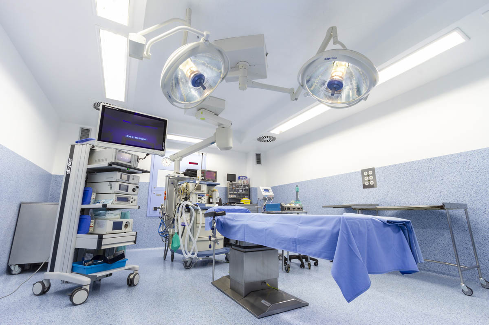
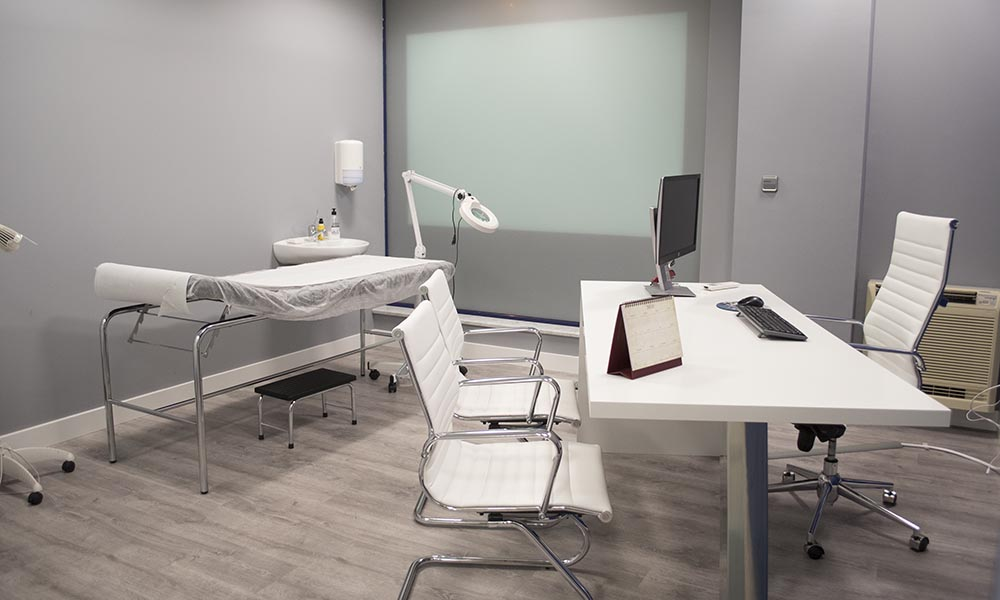
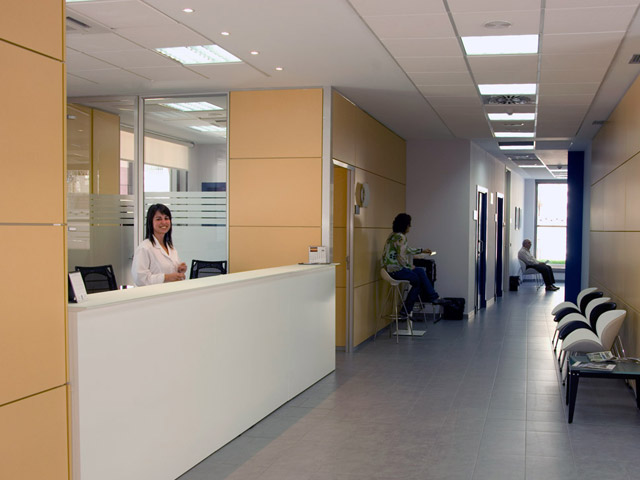

La medicina es la única profesión universal que, en todas partes, sigue los mismos métodos, actúa con los mismos objetivos y busca los mismos fines. ~Sir William Osler
ECOGRAFIAS
Relizamos varias ecografias, toca en el boton para mas informacion!
Desplazar para arriba el recuadro oscuro para ver todas las ecografias
- DOPLLER FETAL
- OBSTETRICA
- MAMARIA
- ECO TV
- GINECOLOGIA
- RENAL y VIAS URINARIAS
- PROSTATA
- TIROIDES
- ABDOMINAL
- HEPATICA
- PARTES BLANDAS
- SCAN FETAL
- TN (TRANS NUCAL)
Contacto
¡Si necesitas comunicarte no dudes en contactarnos por WhatsApp y responderemos a la brevedad!
Ir a WhatsAppNuestras instalaciones
Aca les dejamos algunas fotos de nuestras instalaciones, para mas informacion pulse en el boton!



